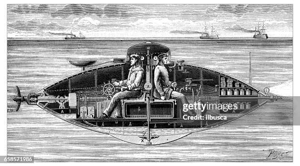
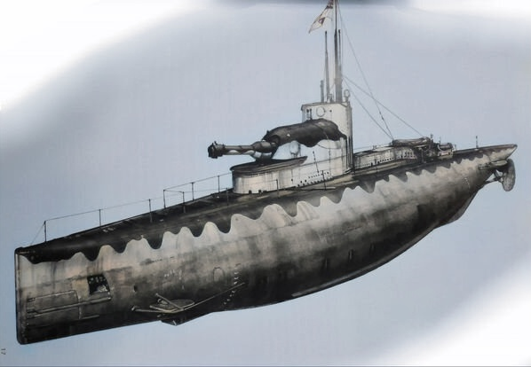
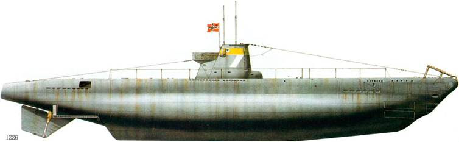
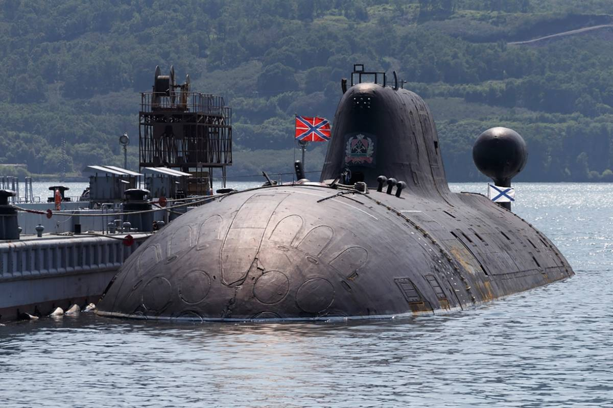
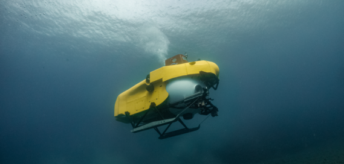

En esta ocasión, hacemos un repaso a los diez primeros submarinos que se construyeron en nuestra historia. Algunos fueron diseñados con fines militares y otros fueron diseñados como prototipos. Entre ellos cabe destacar la presencia de los submarinos españoles Peral e Inctíneo I. El primer puesto de nuestro top ten se lo lleva el Turtle, primer submarino militar diseñado por el estadounidense David Bushnell.
Fue el primer submarino militar diseñado por el estadounidense David Bushnell (Saybrook, Connecticut) en 1776. Tan sólo podía albergar a un tripulante y fue el primer submarino con capacidad de operación subacuática y movimiento independiente. También fue el primero en usar hélices para propulsarse. Tenía ventanillas con cierre hermético y se desplazaba mediante dos tornillos manuales. Desplazaba 900 kg.
En 1800, Robert Fulton diseñó el Nautilus, un submarino de tracción humana. Fue botado en París en 1801. Alcanzaba los 2 nudos de velocidad por debajo del agua y contaba con una eslora de 6,5 metros y 1,9 metros de manga. Estaba equipado con tanques de lastre y con timones horizontal y vertical. Tenía una vela plegable y periscopio.
|  |
 |
|
|  |
 |
 |